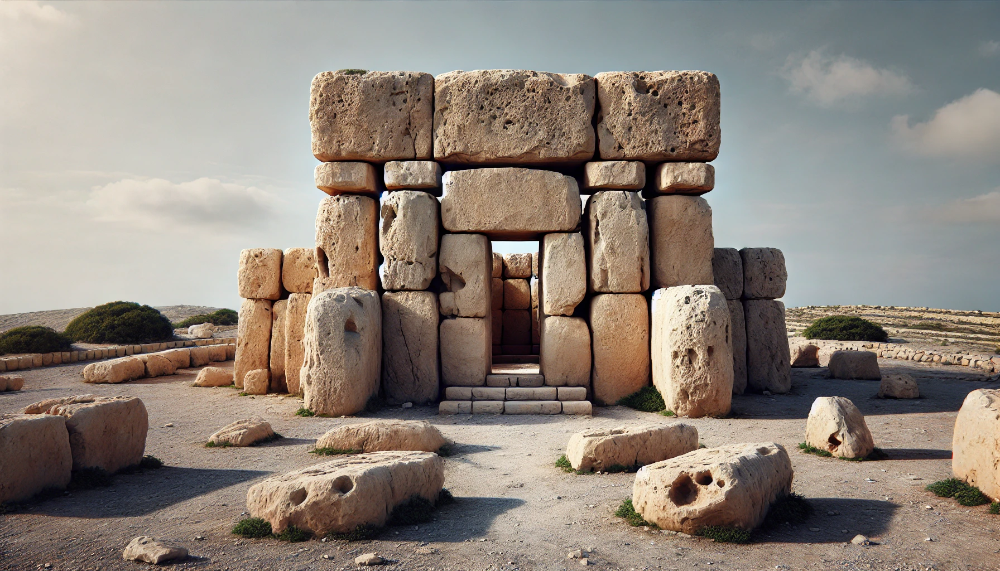

Hagar Qim: A Prehistoric Wonder on Malta’s Skyline
Visit Hagar Qim, a remarkable ancient site over 5,000 years old, overlooking the stunning Mediterranean Sea. Hagar Qim is part of the Megalithic Temples of Malta, which is recognised by UNESCO. It is also one of the oldest free-standing stone buildings in the world.
Architectural of Hagar Qim
Hagar Qim is a very good example of ancient architecture. At first when you approach the temple, you will see its unique concave front that leads into a central passage. This central passage has semi-circular rooms called apses. The fascinating part is that the builders used two types of local limestone: strong coralline stone for the outer walls and softer globigerina stone for the interior. Also, inside, you will see carved panels showing spirals, plants, and animal patterns. The carvings will really show you the creativity and skill of the people who built it. We have to mention that the original carvings are now at the National Museum of Archaeology in the capital Valletta, where they show off the skills of this ancient society. Also, the doorways are interesting; Some are made from large stone trilithons, and others are single pieces called porthole doorways.
Ritual and Purpose
Hagar Qim has a very clear layout, with the apses arranged in a straight line. This design also suggests that it was important for some rituals. The artefacts found there, as well as the temple’s location overlooking the plains to the east and the sea to the west, gives an indication for a spiritual connection between the land and the sky.
Preserving Malta’s Heritage
Hagar Qim is a temple that has stood for thousands of years. However, the weather has made it difficult to preserve it in a good condition. In order for this site to be preserved and protected, they built a lightweight, protective, removable shelter in 2008. This was an important decision taken to protect and preserve this ancient heritage.
A UNESCO World Heritage Site
Hagar Qim is one of the Megalithic Temples of Malta, which were collectively inscribed as a UNESCO World Heritage Site. These temples are amongst the oldest free-standing stone structures in the world and were first recognised by UNESCO in 1980.
Your Visit to Hagar Qim
Hagar Qim isn’t just about history; it’s an awesome experience that really takes you back to Malta’s past. Whether you’re into its cool architecture, the stunning views, or the culture, this temple is definitely something you’ll remember long after you leave. Check out Hagar Qim – where ancient mysteries and timeless beauty come together.